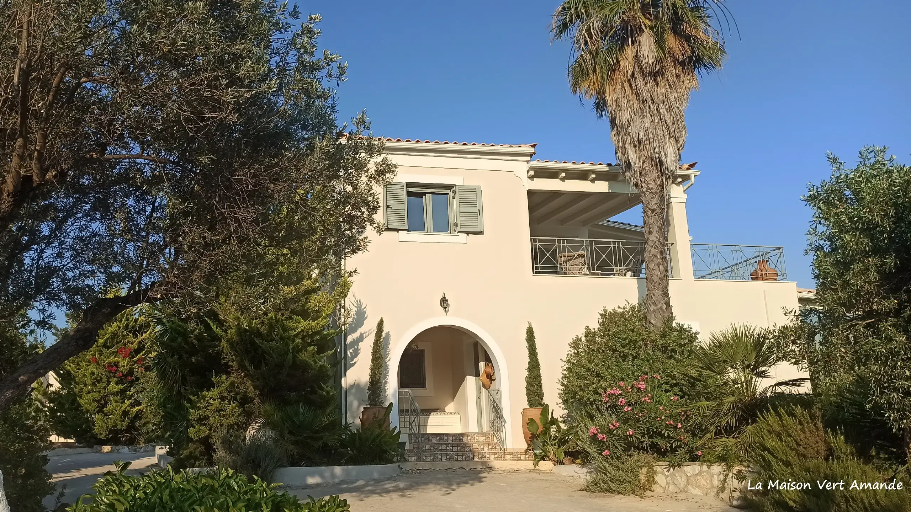

The house
Surrounded by greenery and olive groves
A privileged, peaceful setting where time passes in complete serenity.
The house
Welcoming, warm, refined, authentic
La Maison Vert Amande is a place that reflects its owners: welcoming, warm, refined and authentic. Nothing flashy. A peaceful retreat, far from the legendary hustle and bustle of the islands — which are often crowded, noisy and lively.
Surrounded by greenery and olive groves, you'll be captivated by the tranquillity and untamed beauty of the surroundings. The cosy atmosphere of the guest room, its own private entrance and two very large verandas offering breathtaking sea views allow you to retreat and admire the sunsets and sunrises.
We hope our guests will enjoy a “simple island life” at an establishment that cares for the environment and is a truly family-run guesthouse. Our daily focus is on ensuring guests enjoy a wonderful stay in a comfortable and spacious room, and we are entirely at their disposal to make this happen.
Our establishment is also well known thanks to word of mouth from our consistently satisfied guests.


Cycladic Architecture
Built in the traditional island style.
Thick white walls that keep the space cool, beautiful arches, and smooth Parian marble floors. The design is simple and minimal, ensuring nothing distracts you from the Aegean sea view or the music playing in the background.
The vocabulary is old — Cycladic, monastic, patient. Every detail is chosen so nothing competes with the light coming off the water, or the record turning in the corner.
Inside the Room
A calm and relaxing space.
The bar is made of smooth white plaster, and the chairs are handwoven right here in Paros. The design is completely minimal—no flashy details or bright colors. Everything is kept simple so the food, the drinks, and the light can be the stars of the show.


Step outside
Golden Hour, every evening
Enjoy cold cocktails and great music as the sun goes down over the Aegean. The sun drops straight into the water in front of the terrace. We time the first plates and the first cocktails to meet it — the busiest, quietest half hour of the day.

Come and sit
The best tables face west. Reserve yours.